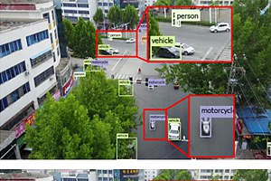
Robust Grounding with MLLMs against Occlusion and Small Objects via Language-Guided Semantic Cues
ICASSP 2026
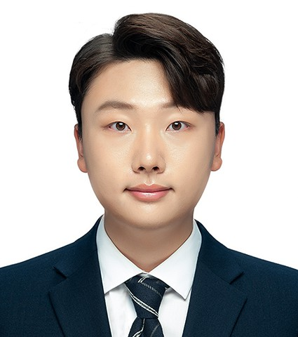
김현준
Ph.D. Candidate
Electrical Engineering · KAIST
Daejeon, South Korea
kimhj709@kaist.ac.krI am a Ph.D. candidate in Electrical Engineering at KAIST, advised by Prof. Yong Man Ro. I recently completed a Student Researcher internship at Google DeepMind in Tokyo.
My research focuses on multimodal large language models, with an emphasis on spatial and temporal understanding. I work on visual grounding, long-form video understanding, and robust perception in challenging environments.
Multimodal learning · Visual grounding · Video understanding

ICASSP 2026
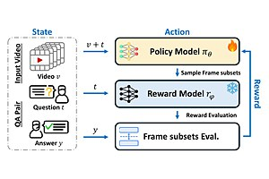
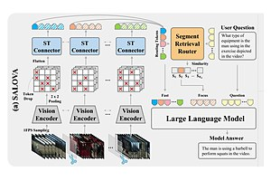
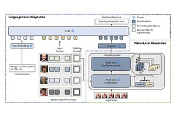
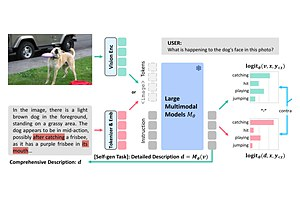
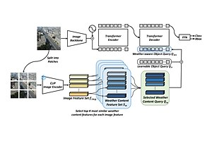
ICIP 2024 · Oral
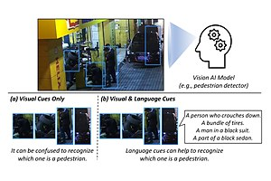
TCSVT 2024
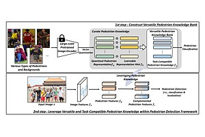
Pattern Recognition 2024
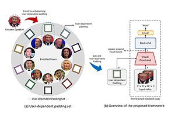
Submitted to ICLR 2027
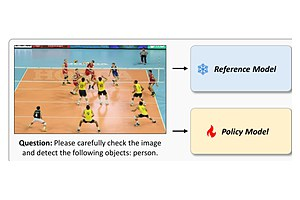
Submitted to TIP
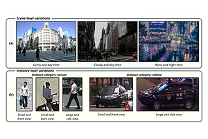
Submitted to TCSVT
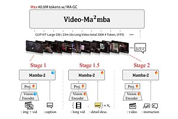
Student Researcher · Tokyo, Japan
Ph.D. Candidate, Electrical Engineering
Advisor: Prof. Yong Man Ro
B.S., Electrical and Electronic Engineering
Reviewer
CVPR · ECCV · ICML · AAAI · NeurIPS · ICIP
IEEE TIP · IEEE TCSVT